HAVAMET 360 · Kasım 2025
Bir sempozyumun canlı yayını, dışarıdan bakıldığında "kamerayı açıp bırakmak" gibi görünür. Değil. Dört gün boyunca, salonda konuşmacı değiştikçe, sunum açıldıkça, çevrimiçi katılımcı bağlandıkça birinin o anda karar vermesi gerekiyor.
Benim yaptığım işin dökümü:
| Alan | Ne yaptım |
|---|---|
| Kamera | Konumlandırma, geniş açı / yakın plan geçişleri, dikey çekim düzeni |
| Ses | Mikrofon karışımı, salon-yayın ses dengesi |
| Işık | Sahne ve konuşmacı aydınlatması |
| OBS | Sahne kurulumu, geçişler, alt bantlar, bekleme ve ara ekranları |
| Grafik | Yayın şablonlarını, logoyu ve alt bantları kendim tasarladım |
| Çevrimiçi | Teams üzerinden uzaktan katılan konuşmacıların yayına alınması |
Hazırlık için yaklaşık iki hafta ayırdım. Salon düzenini önceden çıkardım, şablonları tasarladım, geçişleri prova ettim. Çünkü canlı yayında bir şey ters gittiğinde geri alma imkânı yok — olabilecek her şeyi önceden düşünmek zorundasınız.
Masanın arkası
Yayın dediğimiz şey ekranda iki saniyede geçen bir görüntü; arkasında ise kurulması, kablolanması ve dört gün boyunca ayakta tutulması gereken bir masa var.
Aşağıdaki kareleri kurulum sırasında kendim çektim: ses mikseri, mikrofonlar, tripod üstünde kamera, OBS'in çalıştığı dizüstü ve kontrol monitörleri. Hepsini tek başıma kurdum ve yayın boyunca bu masada oturdum.
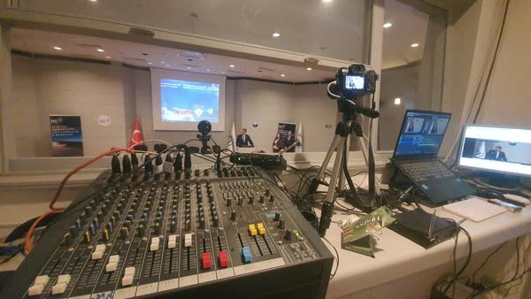
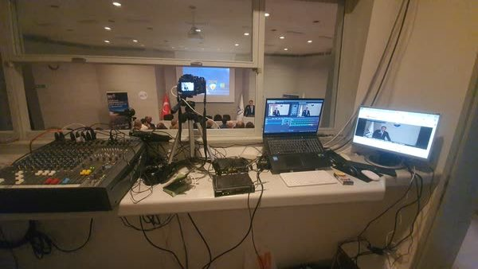
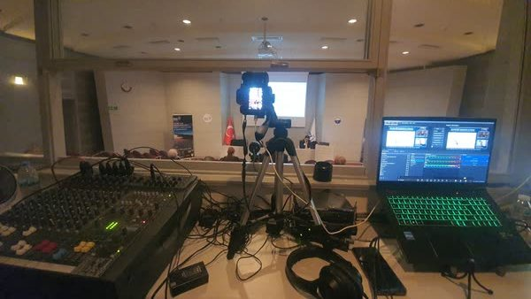
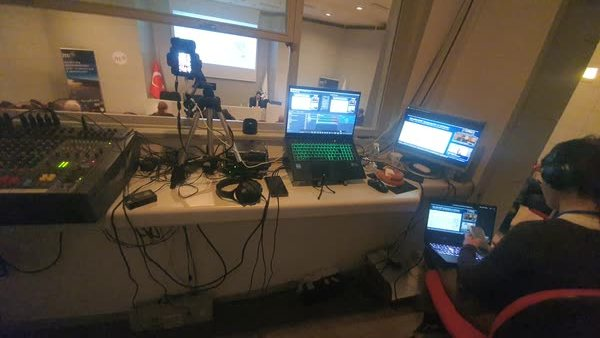
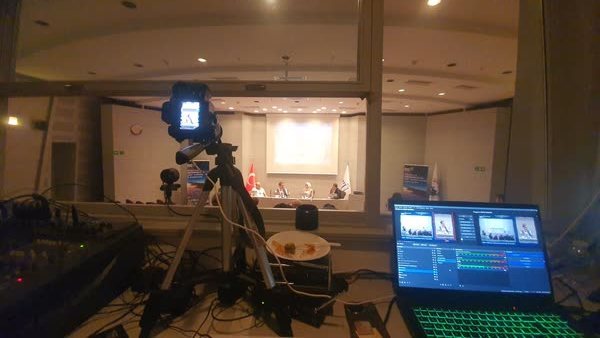
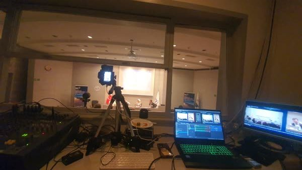
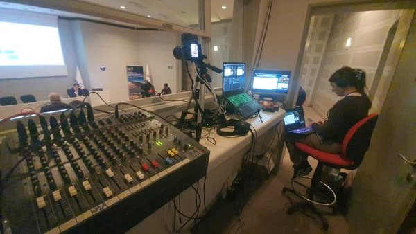
Yayın sürerken
Kısa kayıtlardan aldığım üç kesit — mikserden salona, OBS ekranından kontrol monitörlerine.
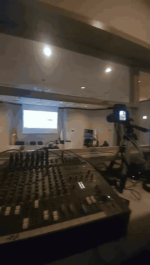
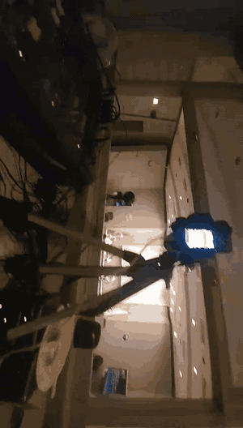
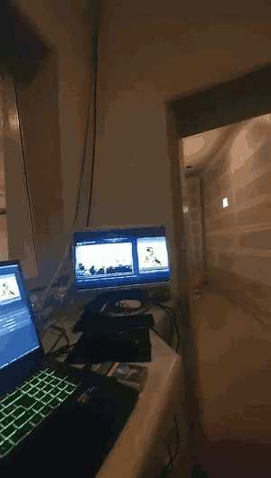
Hazırladığım yayın şablonları
Aşağıdakiler yayın sırasında ekranda görünen şablonların kendisi — hepsini sıfırdan ben tasarladım. Ortadaki boş alanlar kasıtlı: canlı kamera görüntüsü ve sunum ekranı yayın sırasında oraya yerleşiyor.
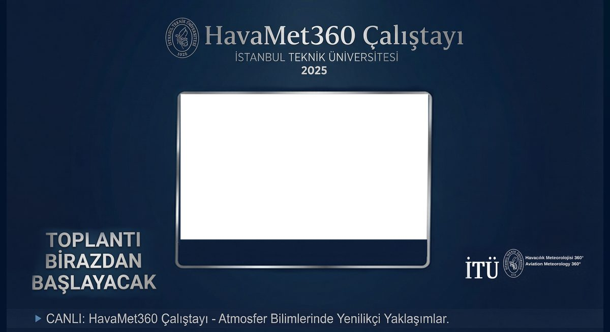
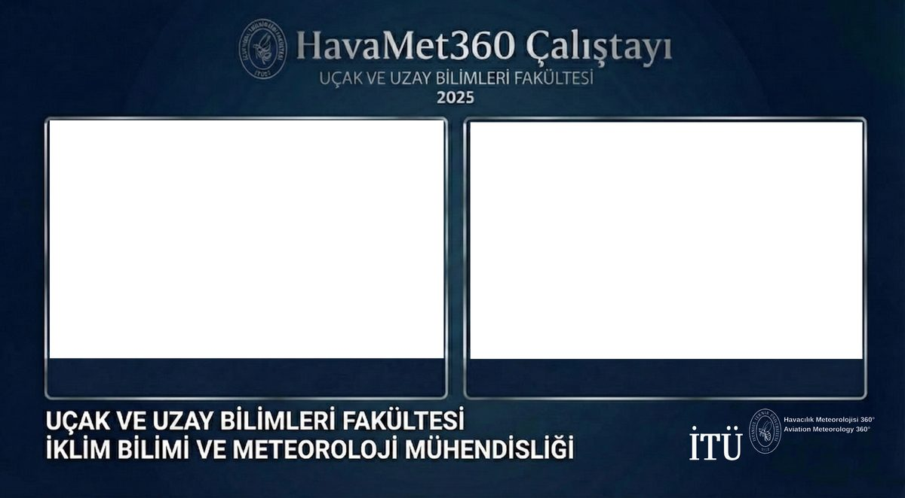
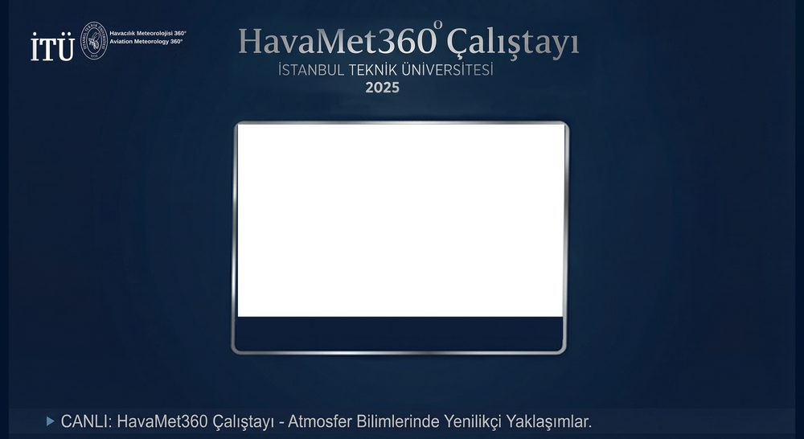
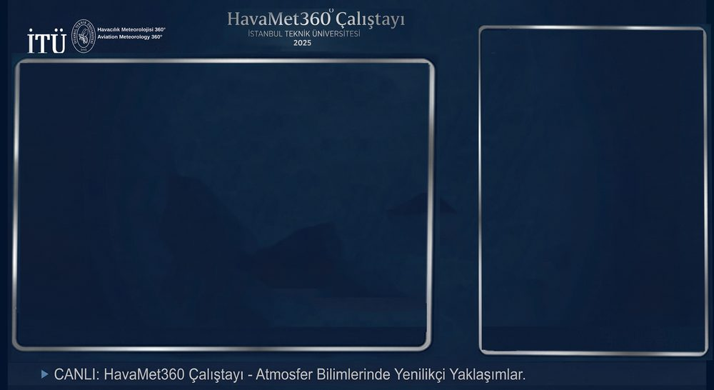
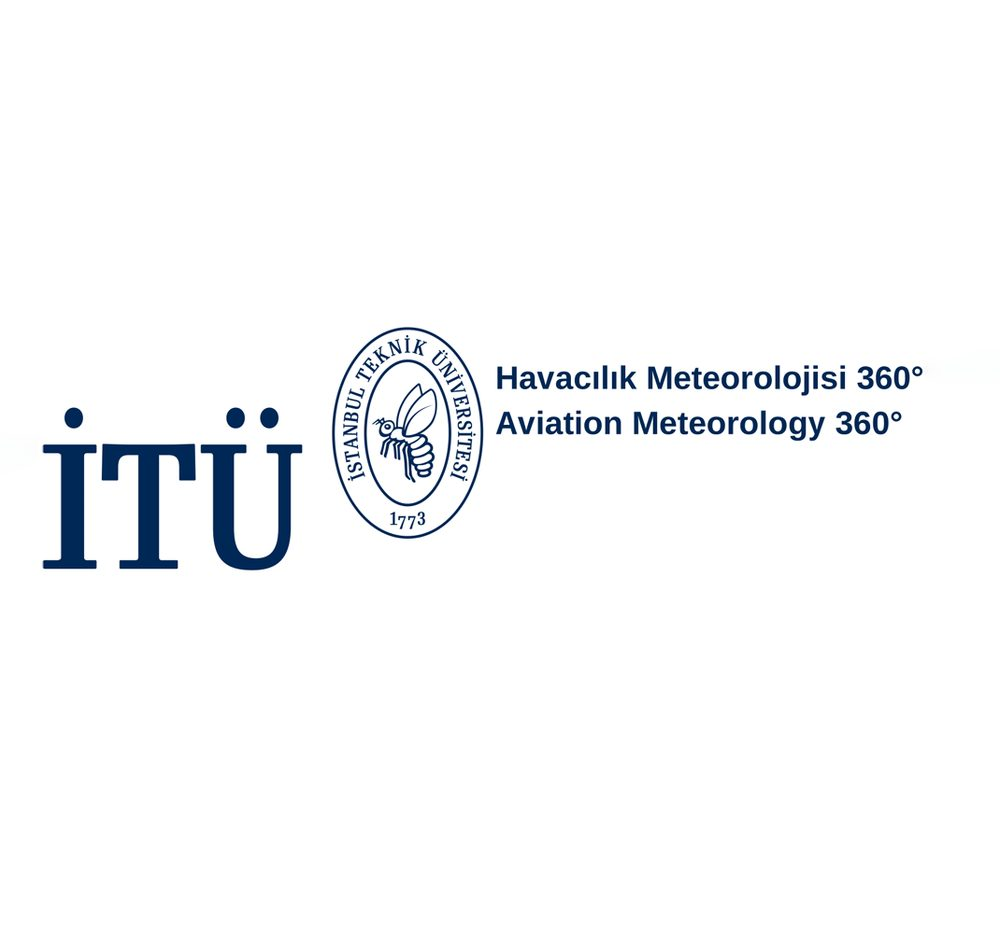
Dünya Meteoroloji Günü · Mart 2026
HAVAMET'ten dört ay sonra, bölümüm Dünya Meteoroloji Günü programı için tekrar bana geldi. Yayını yine tek başıma kurdum ve bu etkinlik için bambaşka bir grafik seti hazırladım — önceki şablonu kopyalamadım.
Bence buradaki asıl şey şu: bir kez yapılan iş şans olabilir, ikincisinde çağrıldıysanız iş güvenilirdir.
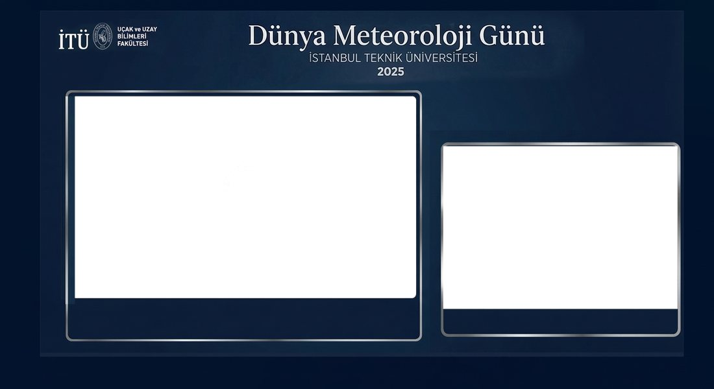
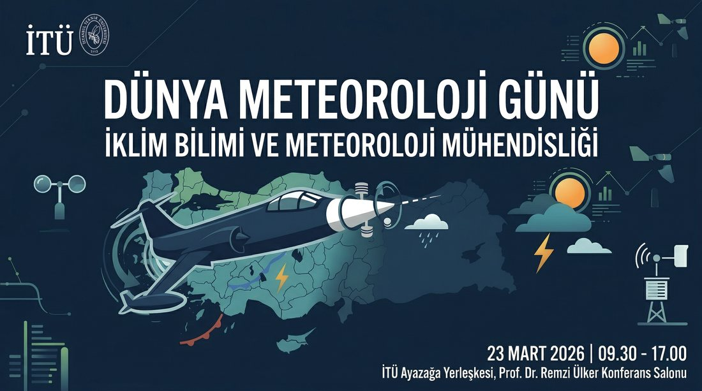
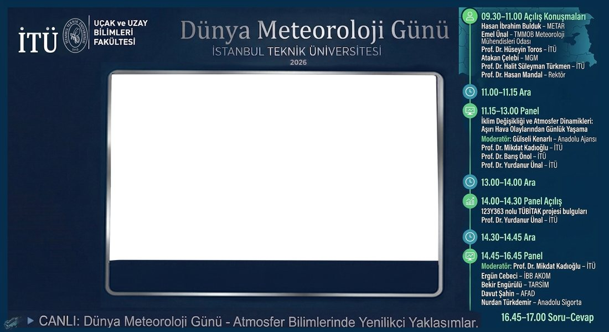
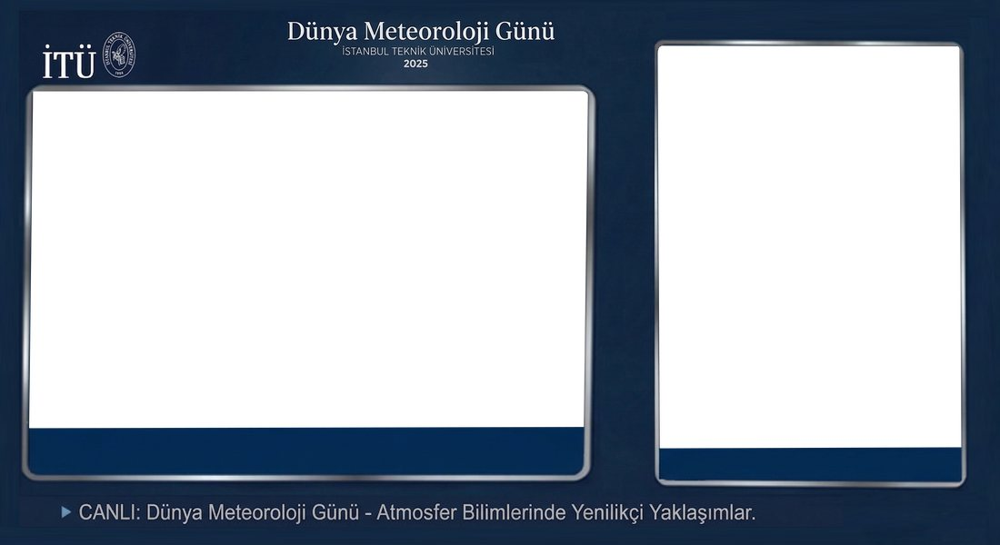
Kayıt elimde
Bu yayının tam kaydı (23 Mart 2026, yaklaşık 6 GB) arşivimde duruyor. İncelemek isterseniz iletebilirim.
Bu iş bana ne kattı
Bu işi buraya koymamın sebebi bir teşekkür almış olmam değil. Sebebi şu: bölümümün bir etkinliğinde ihtiyaç duyulan bir şey vardı, yapabilecek kimse yoktu, ben yapabiliyordum ve yaptım. Ücret ya da kredi konuşulmadı; ben de konuşmadım.
Fotoğraf ve video tarafını bilmem sayesinde bölümüm iki etkinliğini yayınlayabildi. Bunu, alanım dışında öğrendiğim bir şeyin alanıma geri dönmesi olarak görüyorum — ve çalışmak istediğim tarzın örneği bu.